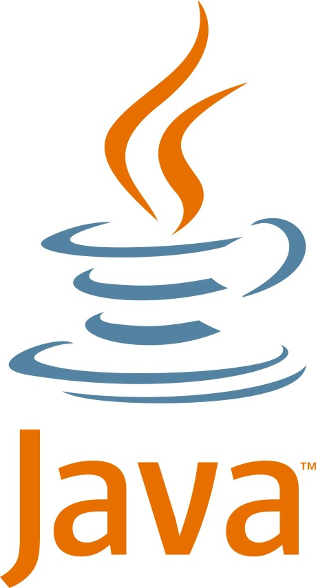

Why did I pivot to Java?

When I began my CS studies, it was all Java. It was used on programming introductory courses and thereafter very extensively during the undergraduate studies, with only one exception, the Programming languages and paradigms course, which introduced students to other ways of thinking about programming. I was by that point quite familiar with functional programming both as a concept and by playing around with Haskell, and had read about logic programming, both topics which were on the course. Around that time I also had my Lisp and functional programming hype period. During data science master's degree studies programming language switched over to Python. So why would I after all that go back to Java?
Java has been lambasted as boring stupid huge unelegant corporate language and it's trendy to hate it. I admit, I fell into that thinking, the thinking being "there got to be a better way to make things than this which for some reason is so widely used". It's amazing how thinking process ends there, not thinking things through properly, such as maybe just maybe all these thousands of companies and individuals actually have carefully explored the alternatives and decided on Java.
When Java went modular after Java 8 in 2017 and the entire Java project did drastic changes in leadership model, licensing and project ownership, I was cautious. Especially since the 6 month release cycle seemed like madness after what had been several years between releases. But since then, the Java programming language continued to develop faster and became truly competitive. It also adopted a sensible cycle of LTS releases with 3 years between releases and over twice the support time, so no constant life on razor edge required, while providing something fresh to jump at frequently for those so inclined. As Java is not so tied to Oracle anymore, it has more breathing room and contributors to develop. With things looking good regarding the future of the language, it was time to re-evaluate it.
# Fundamentals
Java is very performant, and getting faster still with every release. This steady performance improvement release after release is noteworthy, as Java started its rise 25 years ago. The Java we are using today is much faster than the Java that ran on those antique computers, while computers are only getting ever faster. It kicks Python right out of ballfield. Not even PyPy saves Python's poor performance. Of course highly optimized C++ code beats everything, but that optimization requires heavy effort to get things working faster than in more managed languages, especially as program size grows.
After performance considerations, the maintainability considerations. Since Java is object-oriented and strongly typed, software maintenance is relatively effortless compared to the alternatives, as I noted in my Lisp text. I'm happy I took the detour of other undeniably more rapidly written languages to understand that. In the long run, the dynamic hard to debug Lisp (or Python!) piece of code that took you 5 minutes to write compared to 15 minutes with Java will come and bite you sooner or later. JavaScript side of things has also come to realize this, as can be observed from growing popularity of TypeScript. And in my view, software engineering should be a long-term effort instead of hastily written throwaway code.
# Real World Applications
Use scenarios come next in priority because if language is good but has no use, why bother? On servers Java is the king, and servers are where the cloud services are, and cloud services are where the majority of growth is now globally, even for Microsoft. Briefly coming back to the performance aspect of things regarding cloud services, big name companies such as Netflix and Twitter abandoned their old cloud platforms made with whatever in favor of Java-based infrastructure. Not only that, but Microsoft hosted their first ever Java conference in 2020 because of their reliance on Java. We'll come back to that in a bit.
What about other uses than running a server? Java is better than before for desktop GUI's with JavaFX. It has taken over Swing in popularity, at least by GitHub metrics: as of writing JavaFX gets 32,507 repository results vs. Swing 26,134 repository results. Things are looking bright now with JavaFX decoupled off the Java standard library. That will likely lead to even wider applications more rapidly than was possible with Swing. My pet project is made with JavaFX, and as a front-end oriented developer I dig it, it follows the familiar separation of logic (Java), layout (XML) and style (CSS). Speaking of front-end development and internet, there is Vaadin for creating web UI's with Java.
Finally there is the tooling and language ecosystem. Coming from JavaScript world to Java and then discovering Maven was a revelation. Like NPM but for Java! I adopted it right away and so should you. Sure, there is Gradle for the JSON oriented people, but the good thing is no matter what you choose for project, the packages are the same. Like NPM and Yarn. Editors and IDEs are of course important, and there exists Java mode or plugins for every advanced editor I can think of. And then there are at least 3 good IDEs (Eclipse, IntelliJ, NetBeans) that come to mind, all of them multiplatform.
All of these considerations, and many more intertwined inbetween, made Java my choice for pivoting and specializing into. And should the worst happen for whatever black swan reason of Java becoming obsolete in my lifetime, its conventions inherited by those that came after it would surely make any transition to the new great a breeze.
# Appendix: Was C# ever an option?
C# is intentionally similar to Java with roughly the same use cases. I gave some serious thought to specializing into it instead of Java, but ultimately decided not to for several reasons. First of all, I came to understand that the performance under ASP.NET is bad compared to Java's Spring. When big names migrate to Java instead of ASP.NET there has to be something in big boy stories of cloud unviability of C# past certain point. Not to mention Microsoft basically admitting it themselves with that little Java conference of theirs.
As an UI oriented man, there is something wrong about C# applications I run on Windows 10, either as a sides directly from Microsoft or from Microsoft Store. Relatively slow application loading times, and then there is no snappiness anywhere, and - now this is hard to explain in concrete measurable terms - but a viscous feeling of gummy when using those. I am not sure if it's the animations or what, but I perceive a slight lag and delay on whatever I am doing with those applications. It's odd and unique in a bad way.
Third is tooling. I came to understand there is nothing like Maven for C# so that's a big no. Second is IDEs, with Visual Studio Community being the only excellent free one that I know of. Problem being of course its ginormous size of about 10Gb just to get something done on Windows desktop. But I don't use only Windows so there is that too. Because of the almost total reliance on Visual Studio, C# quickly becomes a non-option.
All in all, C# wasn't an option. Not from entrepreneurial or developer or potential fun point of view. And if things change, the syntax and conventions are so similar to Java that I'm not worried.